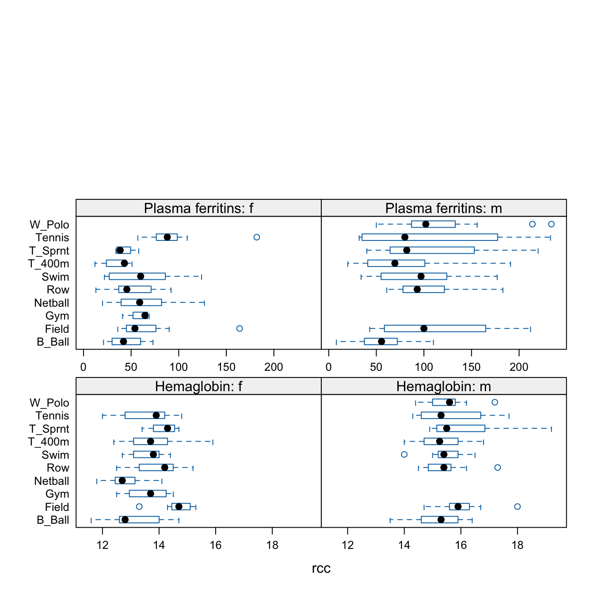
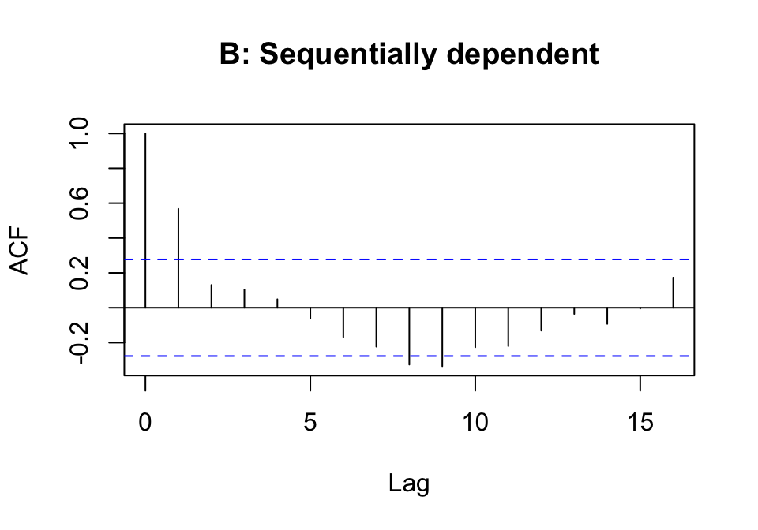

1 Answers to Selected Chapter 1 Exercises
library(DAAG)
::: {.colbox data-latex=""}
::: {data-latex=""}
Exercise 1
:::
The data frame DAAG::orings has details of damage that had occurred in US space shuttle launches prior to the disastrous Challenger launch of January 28, 1986. Observations in rows 1, 2, 4, 11, 13, and 18 were shown in the pre-launch charts used in deciding whether to proceed with the launch, with remaining rows omitted.
Compare plots of Total incidents against Temperature: (i) including only the observations shown in the pre-launch charts; and (ii) using all rows of data. What did the full set of data strongly suggest that was less clear from the plot that showed only the selected rows?
:::
Use the following to extract rows that hold the data that were presented in the pre-launch charts:
::: {.cell layout-align="center"}
```{.r .cell-code}
orings86 <- DAAG::orings[c(1,2,4,11,13,18), ]
library(lattice)
gph1 <- xyplot(Total ~ Temperature, data=orings86, pch=16)
gph2 <- xyplot(Total ~ Temperature, data=DAAG::orings)
c("Points in pre-launch charts"=gph1,"All Points" = gph2, y.same=TRUE):::
Points are best shown with filled symbols in the first plot, and with open symbols in the second plot. (Why?)
Exercise 7
Plot a histogram of the earconch measurements for the possum data. The distribution should appear bimodal (two peaks). This is a simple indication of clustering, possibly due to sex differences. Obtain side-by-side boxplots of the male and female measurements. How do these measurement distributions differ? Can you predict what the corresponding histograms would look like? Plot them to check your answer.
possum <- DAAG::possum
par(mfrow=c(1,2), mar=c(4.1,4.1,1.6,0.6))
hist(possum$earconch, main="")
boxplot(earconch ~ sex, data=possum, horizontal=TRUE)
par(mfrow=c(1,1))The left panel shows a histogram of possum ear conch measurements. The right panel shows side by side boxplots of the measurements, one for each sex. A horizontal layout is often advantageous.
Note the alternative to boxplot() that uses the lattice function bwplot(). Placing sex on the left of the graphics formula leads to horizontal boxplots.
bwplot(sex ~ earconch, data=possum)The following uses the lattice function to give side by side histograms:
histogram(~ earconch | sex, data=possum)Density plots, in addition to avoiding what has to be a largely arbitrary choice of cutpoints, are easy to overlay.
densityplot(~earconch, data=DAAG::possum, groups=sex,
auto.key=list(columns=2))
Exercise 8
For the data frame ais (DAAG package), draw graphs that show how the values of the hematological measures (red cell count, hemoglobin concentration, hematocrit, white cell count and plasma ferritin concentration) vary with the sport and sex of the athlete.
The plots that follow show one possibility that gives a relatively compact presentation:

The final 2 in layout=c(2,3,2) spills the panels for the final two measures over onto a second page.
Exercise 14
An experimenter intends to arrange experimental plots in four blocks. In each block there are seven plots, one for each of seven treatments. Use the function to find four random permutations of the numbers 1 to 7 that will be used, one set in each block, to make the assignments of treatments to plots.
for(i in 1:4)print(sample(1:7))[1] 1 2 7 4 6 3 5
[1] 5 1 7 3 6 2 4
[1] 6 5 3 7 2 4 1
[1] 2 4 6 7 3 5 1## Store results in the columns of a matrix
## The following is mildly cryptic
sapply(1:4, function(x)sample(1:7)) [,1] [,2] [,3] [,4]
[1,] 6 7 4 1
[2,] 7 6 2 2
[3,] 2 3 3 6
[4,] 1 4 1 3
[5,] 5 1 7 7
[6,] 3 2 6 5
[7,] 4 5 5 4Exercise 15
The following data represent the total number of aberrant crypt foci (abnormal growths in the colon) observed in 7 rats that had been administered a single dose of the carcinogen azoxymethane and sacrificed after six weeks:
87 53 72 90 78 85 83Enter these data and compute their sample mean and variance. Is the Poisson model appropriate for these data. To investigate how the sample variance and sample mean differ under the Poisson assumption, repeat the following simulation experiment several times:
x <- rpois(7, 78.3)
mean(x); var(x)y <- c(87, 53, 72, 90, 78, 85, 83)
c(mean=mean(y), variance=var(y)) mean variance
78.28571 159.90476 Then try
x <- rpois(7, 78.3)
c(mean=mean(x), variance=var(x)) mean variance
74.71429 70.90476 It is unusual to get as big a difference between the mean and the variance as that observed for these data, making it doubtful that these data are from a Poisson distribution.
Exercise 21
The following code generates random normal numbers with a sequential dependence structure:
y <- rnorm(51)
ydep <- y[-1] + y[-51]
acf(y, main='A: iid normal values')
acf(ydep, main='B: Sequentially dependent')Repeat this several times. There should be no consistent pattern in the acf plot for different iid (independently and identically distributed) random samples y, and a fairly consistent pattern in the acf plot for ydep that reflects the correlation that is introduced by adding to each value of y the next value in the sequence.
The following should be repeated several times:

In most plots, a lag 1 autocorrelation that is outside of the error bounds shown by the dashed horizontal lines should be evident in the second plot.
Exercise 22
Assuming that the variability in egg length in the cuckoo eggs data is the same for all host birds, obtain an estimate of the pooled standard deviation as a way of summarizing this variability. [Hint: Remember to divide the appropriate sums of squares by the number of degrees of freedom remaining after estimating the six different means.]
cuckoos <- DAAG::cuckoos
sapply(cuckoos, is.factor) # Check which columns are factors length breadth species id
FALSE FALSE TRUE FALSE specnam <- levels(cuckoos$species)
ss <- 0
ndf <- 0
for(nam in specnam){
lgth <- cuckoos$length[cuckoos$species==nam]
ss <- ss + sum((lgth - mean(lgth))^2)
ndf <- ndf + length(lgth) - 1
}
sqrt(ss/ndf)[1] 0.9051987A more cryptic solution is:
diffs <- unlist(sapply(split(cuckoos$length, cuckoos$species),
function(x)x-mean(x)))
df <- unlist(sapply(split(cuckoos$length, cuckoos$species),
function(x)length(x) - 1))
sqrt(sum(diffs^2)/sum(df))